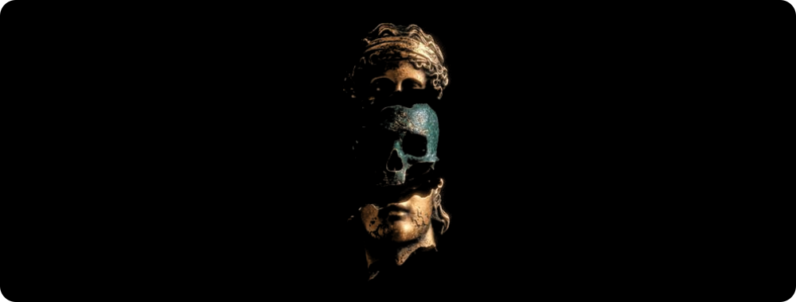

Masthead — severed bust

The sculpture is keyed out of its background, then split into its three physical pieces by connected-component labelling — not by horizontal bands, which cannot separate a skull that overhangs the jaw. Each piece is its own PNG on its own clock (8 / 10 / 9 s), so the head never reassembles and only the cutouts move.
Nameplate — header-neon.svg

Same text animation as before — gradient sweeping the letters, pulsing rule, blinking caret — over the marble statue, which drifts a few pixels across 18 s. A horizontal fade keeps the left side dark enough to read the name against.
Terminal — header-terminal.svg

Same 9 s typing sequence, now over storm cloud. The crop sits above the source image's own "GOD'S PLAN" lettering, which would otherwise have landed straight on the typed lines.
About Me sidebar — PERSPECTIVE

Not the photo — the word rebuilt as live type, so the letters can move. Each glyph spins in from its own direction, settles at its quarter turn, holds, then scatters again on a 12 s loop, cascading 0.13 s apart. Josefin Sans Light, subsetted to the eight glyphs the word needs, embedded at 1.6 KB. 11 KB total.
Project banners — each in its own app's theme

FraudLens: the app's own near-black ground, white keyline, monospace corner telemetry, blue caret. A scan sweep crosses every 6 s and the corner labels lift in sequence.

Kuberis: ruled ledger paper, navy Playfair wordmark, gold monospace marginalia. A ledger should sit still, so the only motion is the rule drawing itself under the wordmark.
Divider

An axon with dendrite stubs. One action potential sweeps left to right every 3.6 s, each relay node brightening as it passes.
Footer

The herd is already running, so the picture only gets a slow 30 s push. A vertical scrim darkens the sky behind the type and leaves the horses clear.